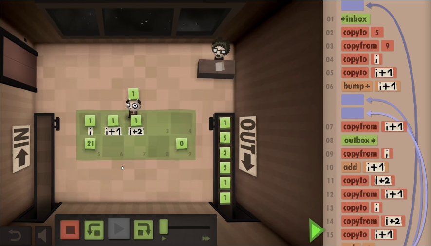
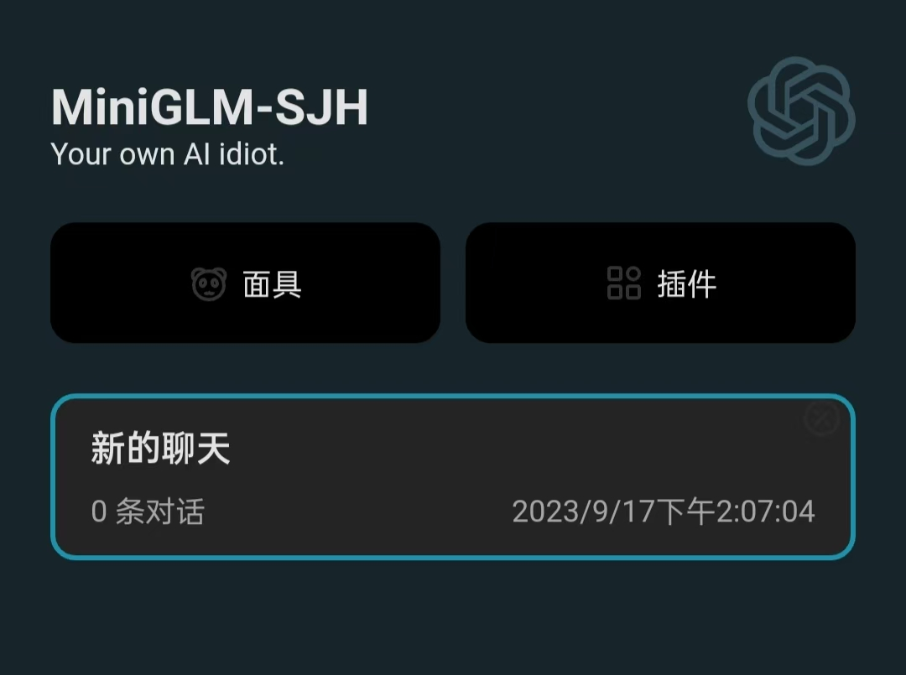

|
|
First Prize Entry of OS Kernel Implementation Track, CSCC 2025 - National Finals
2025.3 ~ 2025.8
Project Report Undefined-OS is a Linux-like, componentized kernel written in Rust based on the Arceos component library. Undefined-OS supports thread safety across multiple CPU cores and can run on various instruction architectures, including x86_64, riscv64, aarch64, and loongarch64, while also supporting execution on QEMU virtual machines and other hardware development boards. We provide a Linux-compatible system call implementation and a system call interface designed for future compatibility with other OSes. Our OS already supports running various applications and programming languages, such as Git, GCC, Vim, Sqlite3, Lua, Rust, and Python. You can use Vim for development, compile with rustc/gcc, and manage versions with Git, completing the full OS development workflow on our OS. In short, you can develop an OS on our OS. |
|
|
Face Sculpting Master
Outstanding Work Award Entry of ByteDance Trae SOLO Hackathon 2025, obtaining Trae's official repost
2025.8
Face Sculpting Master is a face-sculpting Agent developed by our team using the Trae IDE. It can generate 3D virtual avatars based on user-provided descriptions. The Agent creates corresponding Blender code to model a 3D entity and supports adjustments to environmental visual effects, such as lighting. The Face Sculpting Master project won the Outstanding Project Award at the ByteDance Trae SOLO Hackathon 2025 and was officially reposted by Trae. | s

|
Gravity Connect Four
Reinforcement Learning
2023.05 ~ 2023.07
I utilized the Upper Confidence Bound (UCB) algorithm with Monte Carlo Tree Search (MCTS) to implement the Upper Confidence Trees (UCT) algorithm for simulating Gravity Connect Four. This combination allowed the AI to make informed decisions, balancing exploration and exploitation. Numerous simulations helped the AI improve its strategy over time. Testing showed remarkable results, with the AI achieving a 99.9% win rate against human opponents, demonstrating the UCT algorithm's robustness. In 100 test games against various chess algorithms, the AI secured 97 victories, showcasing its adaptability across different strategies. The AI's ability to refine its decision-making through iterative simulations proved crucial in mastering complex game scenarios. |
|
|
NYU Teaching Assistant
2024.10 ~ 2025.01
I hope to practice my ability to use English to communicate in the field of CST, feel the teaching atmosphere of an English university, and try more diversified cultural collisions. Therefore, I applied to be a teaching assistant in the CS Dept of NYU Shanghai for one semester, which was a fulfilling experience. |
|

|
Human Resource Machine
2022.11 ~ 2023.1
I led the team to use C++ to reimplement the programming puzzle game Human Resource Machine developed by Tomorrow Corporation. In this game, players need to input code to control a robot to complete specified tasks, which effectively trains programming thinking without requiring knowledge of any specific programming language,as the game uses its own easy-to-understand code format. Additionally, our game emphasizes code optimization, encouraging players to use the simplest and most efficient code to achieve functionality. |
|
|
RISC-V Pipelined CPU with the SystemVerilog language
2024.11 ~ 2024.12
I led a team in designing and implementing a RISC-V pipelined CPU using SystemVerilog on the Vivado platform. The CPU features a five-stage pipeline for efficient instruction execution. Our design includes robust support for interrupts and exception handling, enabling effective management of unexpected events and errors. It also supports virtual address translation with an integrated Memory Management Unit (MMU), allowing for advanced memory management. We implemented a cache system, consisting of both Instruction Cache and Data Cache, to improve memory access speed and performance. Additionally, the design includes a VGA controller for image display, supporting multimedia output in real-time applications. |
|

|
MiniGLM
Natural Language Processing
2023.9 ~ 2023.10
In this project, we developed a MiniGPT model utilizing a transformer architecture. By leveraging the rich narratives of Jin Yong's wuxia novels, we aimed to capture the essence of these stories. We constructed specific Q/A pairs to pretrain and fine-tune the model, ensuring it could accurately respond to questions about Jin Yong's novels. This approach not only improved the model's comprehension but also enhanced its ability to generate precise answers related to the themes and characters of these iconic works. |
Blogs / X / Github / Huggingface / YouTube / Bilibili / 小红书 / 即刻 / 知乎 /